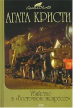

Убийство в "Восточном экспрессе"

На этот раз Эркюлю Пуаро придется расследовать убийства в поездах. В "Голубом поезде", следующем из Лондона до Ривьеры, убивают дочку миллионера. Пропадает прославленный рубин - и в деле явно замешаны американцы и русские. Ну а в "Восточном экспрессе" Пуаро придется распутывать клубок событий, закрученный вокруг жестокого убийства, - и лишь только блестящие таланты великого сыщика способны помочь раскрыть преступление.